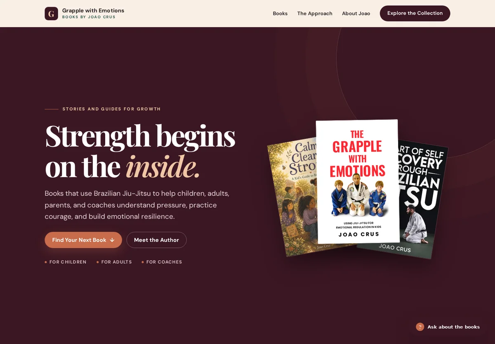

grapplewithemotions.com

01 Books & emotional development
Grapple with Emotions
Stories and practical guides by Joao Crus, connecting Brazilian Jiu-Jitsu with emotional regulation, boundaries and personal growth.
Explore the books (opens in a new tab)